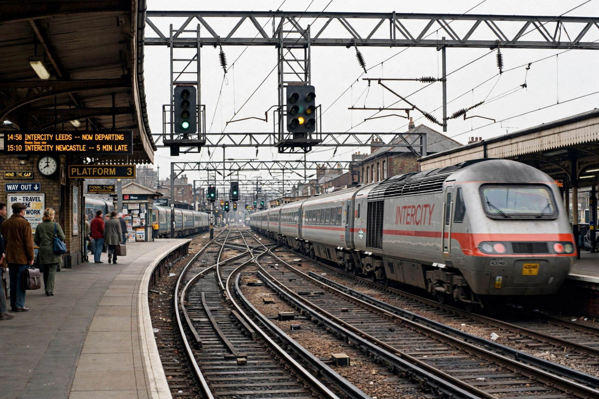

| Founded | 1 April 1994 |
|---|---|
| Defunct | 2002 (operations transferred to Network Rail) |
| Headquarters | London, England |
| Industry | Rail infrastructure |
| Predecessor | British Rail |
| Successor | Network Rail |
Railtrack was a group of companies that owned the track, signalling, tunnels, bridges, level crossings and most stations on the British railway network from 1994 until 2002. It was created as part of the privatisation of British Rail under the Railways Act 1993 and was floated on the London Stock Exchange in May 1996.
Railtrack did not operate trains; instead it charged train operating companies access fees to use its infrastructure, and contracted out most maintenance and renewal work. It owned some 20,000 miles of track and around 2,500 stations, which it leased to the operators.
After flotation, Railtrack's share price rose strongly, and the company undertook large projects, most expensively the West Coast Main Line modernisation, whose costs ballooned from an estimated £2.5 billion to more than £10 billion. Critics accused the company of under-investment and of prioritising shareholders — it paid substantial dividends — over the condition of the network.
On 17 October 2000, a high-speed train derailed at Hatfield, killing four people. The cause was a broken rail suffering from gauge corner cracking ("rolling contact fatigue"). Railtrack responded with emergency speed restrictions across the network and a vast rail-replacement programme, causing chaos and huge costs. Its finances collapsed under the burden.
In October 2001 Transport Secretary Stephen Byers petitioned the High Court to place Railtrack plc into railway administration — a controversial move widely described as renationalisation by the back door. In October 2002 its assets were transferred to Network Rail, a not-for-dividend "company limited by guarantee" backed by the state. Shareholders eventually received compensation of around £2.62 per share after litigation and negotiation.
Railtrack's failure became a byword for the problems of the privatised structure, and its successor arrangements — and later moves toward reintegration under Great British Railways — trace their origins to the crisis of 2000–01.
See also: Great British Railways · British Rail · Network Rail · Hatfield rail crash